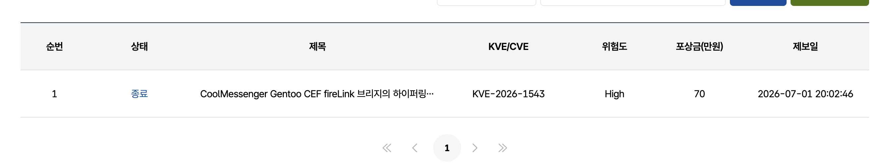

분석 환경 구성
클라이언트를 분석하려면 먼저 연결할 서버가 필요했습니다. 서버의 라이선스 확인은 별도 인증 서버를 이용하는 구조였기 때문에, 서버를 실행할 수 있는 환경을 마련하는 것부터 시작했습니다.
AI와 Ghidra MCP를 함께 사용해 서버 코드 구조를 파악했습니다. Spy++로 UI 버튼과 메시지 핸들러를 추적하고, 해당 핸들러의 어셈블리 동작은 WinDbg32로 확인했습니다. Charles Proxy로는 별도 인증 서버와 주고받는 라이선스 확인 HTTP 요청을 분석했습니다.
이 과정을 통해 서버의 라이선스 파싱 로직을 우회해 서버를 구동했고, 클라이언트를 연결해 취약점을 분석할 수 있는 환경을 마련했습니다.
| 도구 | 사용 목적 |
|---|---|
| AI와 Ghidra MCP | 서버와 클라이언트의 코드 구조 파악 및 함수 분석 |
| Spy++ | 버튼과 메시지 핸들러를 찾아 역공학의 시작점 확보 |
| WinDbg32 | 버튼 핸들러의 어셈블리 동작을 동적으로 확인 |
| Charles Proxy | 별도 인증 서버와의 라이선스 확인 HTTP 요청 분석 |
서버 라이선스 구조 분석
서버 5.10.11의 CoolManager.exe와 CoolSerialChecker.dll을 분석했습니다. 로컬 시리얼 검사와 온라인 인증이 분리되어 있었고, 로컬 검사에 성공해도 온라인 응답과 등록·만료 상태 검사가 별도로 남는 구조였습니다.
| 분석 대상 | 확인한 역할 |
|---|---|
| CoolSerialChecker.dll | COM 인터페이스 IChecker::IsValid를 통한 시리얼과 사용자 수의 로컬 일관성 검사 |
| CoolManager.exe | 온라인 인증 요청, 응답 파싱, 기능·수량 적용 및 등록·만료 상태 저장 |
라이선스를 확인하는 함수 하나만 보는 대신, 온라인 응답이 어떤 상태로 저장되고 서버 시작 시 어떻게 사용되는지 연결해 살펴봤습니다.
- 온라인 인증:
sub_6CC770에서 응답의RetVal을 추출하고 구분자로 나눈 뒤, 상태 코드와 기능·수량 값을 해석하는 흐름을 확인했습니다. - 등록·만료 상태 저장:
sub_6D3D00에서 업그레이드 인증 응답을 읽어 레지스트리의Registered와Expired를 갱신하는 흐름을 확인했습니다. - 시작 시 상태 적용:
sub_6C4960에서 INI와 레지스트리에 저장된 시리얼, 사용자 수, 등록·만료 상태를 읽어 제한 여부를 결정하는 흐름을 확인했습니다.
이 분석으로 로컬 시리얼 검사, 온라인 인증 응답 파싱, 저장된 상태의 적용을 구분했습니다. HTTP 요청은 Charles Proxy로 분석했고, 서버 구동을 막는 라이선스 처리 흐름을 추적해 클라이언트 분석 환경을 마련했습니다.
서버 함수 주소는 5.10.11 기준입니다. 위 구조는 2026.11.02에 정리한 정적 분석 자료에 근거하며, 서버 구동과 클라이언트 PoC 검증 과정은 별도로 기술했습니다.
클라이언트 분석 대상 선정
클라이언트에서도 AI와 Ghidra MCP를 함께 사용해 코드 구조를 파악했습니다. 심볼 이름을 단서로 취약점이 있을 법한 함수를 추린 뒤, 후보 함수의 구현과 호출 흐름을 분석했습니다. 이 과정에서 메시지 본문의 하이퍼링크가 네이티브 코드로 전달되는 경로를 확인했습니다.
링크 처리 동작 확인
메시지 본문의 링크가 어떤 과정을 거쳐 외부 리소스를 여는지 살펴봤습니다. 일반 텍스트로 넣은 HTML 태그는 이스케이프됐지만, 리치 텍스트에서 복사한 하이퍼링크는 href가 보존된 채 수신 화면에 나타났습니다.
원인과 처리 흐름
CEF 뷰의 window.cefInstance.fireLink(href)가 받은 값을 네이티브 코드까지 따라갔습니다. file:// 처리에서는 URL 디코드와 slash 정규화만 했고, URL scheme이나 경로를 제한하는 검증 없이 ShellExecuteExW의 lpFile로 전달했습니다.
anchor click → window.cefInstance.fireLink(href)
→ sub_4659E0 → PostMessageW(..., 0x56DB, ...)
→ sub_541A40 → sub_667130 → ShellExecuteExW(open)
신고 자료에 정리한 정적 분석 경로
재현과 결과
| 시험 | 관찰한 동작 |
|---|---|
| 일반 텍스트 HTML 입력 | 태그가 이스케이프돼 표시됨 |
| 리치 하이퍼링크 전송 | href가 보존돼 수신 화면에서 클릭 가능 |
| 로컬 PoC 링크 클릭 | 로컬 테스트 실행 파일 calc.exe 실행 확인 |
수신자의 클릭이 필요합니다. UNC/WebDAV 원격 경로에서는 Windows 경고나 실행 확인 UI가 나타날 수 있었습니다. NTLM 노출과 외부 프로토콜을 통한 추가 실행은 환경에 따른 가능성이므로, 직접 확인한 로컬 PoC 결과와 구분했습니다.
제보와 조치
네이티브 핸들러의 URL scheme allowlist와 링크 생성·저장·렌더링 구간의 일관된 검증을 제안했습니다. KISA 제보 후 패치가 이뤄졌으며, 처리 내역에는 High·포상금 70만 원·종료 상태가 표시돼 있습니다.

KISA 신고포상제 처리 내역 원본 화면
패치 전후 정적 비교
2026.11.02에 클라이언트 5.75.80.1과 5.75.80.2의 설치 파일 및 추출 실행 파일을 정적으로 비교했습니다. 5.75.80.2에는 KVE-2026-1543 link BLOCK, link WARN, namo href stripped 문자열과 함께 링크 정규화·정책 검사 및 표시 단계 방어가 추가되어 있었습니다.
기존 fireLink 호출과 범용 URL 열기 계층은 남아 있었습니다. 변경점은 HTML 표시 단계에서 위험한 href를 제거하고, 실제 열기 큐에 넣기 전에 링크를 다시 검사하는 것이었습니다.
| 비교 항목 | 5.75.80.1 | 5.75.80.2 |
|---|---|---|
| 링크 열기 전 검사 | 신고 경로에 스킴·경로 제한 누락 | 정규화 후 허용·경고·차단 정책 적용 |
| 일반 웹·메일 스킴 | 범용 열기 경로로 전달 | http·https·mailto 무경고 허용 |
| file 링크와 로컬·UNC 경로 | 검증 없이 열기 경로로 전달 | 파일 경로로 분류한 뒤 위험 확장자 차단, 그 외 사용자 확인 |
| 명시적 사용자 정의 스킴 | 범용 열기 경로로 전달 | 허용 목록 밖 스킴 차단 |
| HTML 표시 단계 | 신고한 리치 하이퍼링크의 href 보존 | 위험 href 제거 함수 추가 |
실제 열기 전 검사 위치
5.75.80.2의 sub_5AB910은 EzUtil::ConfirmLinkOpen에 해당하는 sub_66E390을 호출하고, 허용되거나 사용자가 확인한 링크만 실제 열기 목록에 넣었습니다.
링크 목록 처리 sub_5AB910
→ ConfirmLinkOpen sub_66E390
→ URL 정규화 sub_66DB60
→ 스킴 추출 sub_66DFC0
→ 정책 분류 sub_66E180
→ 허용·확인된 링크만 열기 큐에 삽입
→ 작업 스레드 sub_5AC690
→ 기존 URL 열기 계층 sub_670B20
정규화 함수에는 URL 디코딩 최대 5회 반복, 공백·제어문자 및 일부 보이지 않는 문자 제거가 추가되었습니다. HTML/Namo 표시 단계의 EzUtil::StripUnsafeHrefsForDisplay는 href를 정규화·분류해 위험한 링크를 제거했습니다.
판정과 확인 범위
정적 비교상 신고 경로를 대상으로 한 방어가 실제 열기 전에 적용되는 것을 확인했습니다. 위험 확장자의 차단, 그 외 파일 링크의 사용자 확인, 표시 단계의 href 제거가 함께 추가되었습니다.
패치 버전에서 취약 링크를 클릭하는 동적 회귀 테스트는 수행하지 않았습니다. 따라서 모든 URL 표현에 대한 우회 불가능성까지 검증한 것으로 쓰지는 않았습니다.
비교한 CoolMessenger.exe SHA-256
- 5.75.80.1:
57922FC8BB0F89A199F977B76CDCF6A8D90A96B63B27C2F2A53450C4E87D7CE9 - 5.75.80.2:
D27594F7AD1CCA0A46BE9DE4311D238CEF4E67057E3C3E6B1C660C9A0656E544
원본 기록: Notion ↗